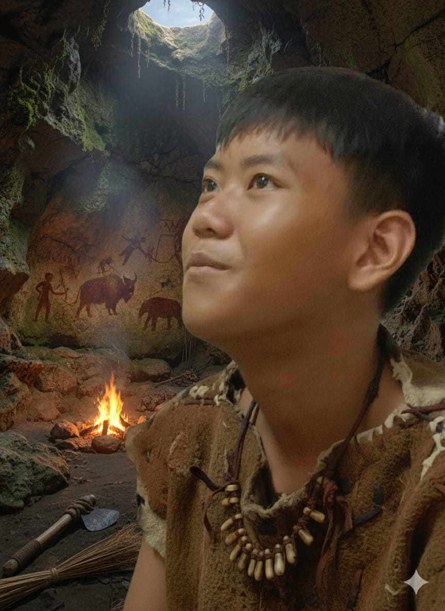

Homo daffinicus .sp
"Out of Kalidoni Theory"

Gambar 1.1 — Ilustrasi Homo daffinicus oleh Prof. Keane Lasiming
Gambar 1.2 — Ilustrasi Homo daffinicus oleh Prof. Keane Lasiming

Gambar 1.3 — Ilustrasi Homo daffinicus oleh Prof. Keane Lasiming
 Gambar 1.4 — Ilustrasi Homo daffinicus oleh Prof. Keane Lasiming
Gambar 1.4 — Ilustrasi Homo daffinicus oleh Prof. Keane Lasiming
Pendahuluan
Homo daffinicus> (/ˈhoʊmoʊ daˈfɪnɪkəs/) adalah spesies manusia purba yang telah punah sejak zaman Pleistosen. Spesies ini pertama kali ditemukan di Sumatera Selatan, tepatnya di Kecamatan Kalidoni, Indonesia. Sebagian besar fosil ditemukan di daerah Gandus, rawa-rawa, dan dataran rendah di sekitarnya.
Penemuan pertama dilakukan oleh Prof. Dr. Farhan Nata Coco, seorang paleoantropolog, pada tahun 2025. Fosil tambahan kemudian ditemukan oleh tim riset yang dipimpinnya. Sementara itu, kelompok budaya yang dikenal sebagai Sindikat "Banjo" turut berperan dalam mengidentifikasi situs dan artefak di wilayah sekitar.
Ciri-Ciri Fisik
Homo daffinicus memiliki tubuh tegap dan tinggi, dengan rata-rata tinggi mencapai 175–200 cm. Warna kulitnya diduga sawo matang, disesuaikan dengan intensitas sinar matahari tropis di wilayah Sumatera Selatan.
- Postur tubuh agak membungkuk, adaptif terhadap lingkungan dataran rendah dan rawa.
- Rahang kuat namun lebih kecil dibandingkan Homo erectus.
- Volume otak berkisar antara 1100–1250 cc, lebih besar dari Homo erectus dan sedikit di bawah Homo sapiens.
- Tengkorak lebih ringan, memungkinkan energi lebih banyak tersalurkan untuk pertumbuhan otak.
Ciri Perilaku
Homo daffinicus hidup dalam kelompok kecil di sekitar sungai dan rawa. Mereka sudah mengenal penggunaan api secara rutin, bukan hanya untuk bertahan hidup, tetapi juga untuk memasak makanan. Pola makan kaya protein dari daging matang membuat pertumbuhan tubuh dan otak mereka meningkat signifikan.
- Membuat alat batu sederhana seperti kapak genggam.
- Menyusun tumpukan jerami simpul (hay pile) sebagai tempat tinggal atau ritual.
- Menggunakan lukisan gua untuk menandai wilayah dan kegiatan sosial.
- Mengenal kalung tulang sebagai simbol status sosial.
Asal Usul dan Evolusi
Homo daffinicus diduga merupakan keturunan lokal Homo erectus yang bermigrasi ke wilayah Sumatera Selatan pada masa Pleistosen awal. Karena isolasi geografis dan kondisi lingkungan tropis yang kaya sumber makanan, populasi ini berevolusi secara mandiri menjadi spesies baru dengan ciri khas tersendiri.
Lingkungan yang stabil dan kaya protein mempercepat proses evolusi mereka — menjadikan daffinicus contoh nyata percepatan evolusi regional di Nusantara. Mereka bukan manusia pertama, melainkan hasil adaptasi dan evolusi dari garis keturunan sebelumnya.
Jalur Migrasi "Out of Kalidoni"
Teori Out of Kalidoni menjelaskan bahwa wilayah Kalidoni berperan sebagai titik persinggahan penting dalam migrasi manusia purba dari daratan Asia menuju wilayah timur Nusantara.
Yunnan (Asia Daratan) → Semenanjung Malaya → Sumatera Selatan (Kalidoni) → Jawa → Nusa Tenggara → Papua → Australia
Dalam perjalanan ini, Homo erectus yang bermigrasi ke selatan beradaptasi di Kalidoni dan berevolusi menjadi Homo Daffinicus, menciptakan garis keturunan unik yang tidak ditemukan di wilayah lain.
Teori Evolusi Lokal Al'Korvus (2025)
Menurut Al'Korvus, Homo daffinicus berevolusi secara mandiri di Nusantara, tepatnya di Sumatera Selatan. Mereka kemudian berkohabitasi dan melakukan persilangan genetik dengan Homo erectus dan Homo sapiens pendatang.
- Volume otak daffinicus mencapai 1100–1250 cc, di antara erectus (900–1100 cc) dan sapiens (1250–1450 cc).
- Tinggi badan mereka besar karena pertumbuhan cepat pada masa remaja–dewasa dan sumber pangan melimpah.
- Sudah mengenal lukisan gua, alat batu, dan struktur jerami simpul sebagai tanda budaya Paleolitikum.
- Persilangan dengan erectus menyebabkan campuran ciri fisik dan kognitif unik, menjadikan mereka “penghubung” antara manusia purba dan modern.
Analisis Kecerdasan
Meskipun Homo erectus dikenal sebagai penemu api pertama, Homo daffinicus adalah spesies yang memanfaatkan api dengan efisien. Mereka bukan penemu api, tetapi pengembang penggunaannya — memasak makanan, menjaga suhu, dan menggunakan api dalam kegiatan sosial atau ritual.
Hal ini menjadikan mereka lebih unggul secara adaptif dan sosial, walau tidak sepenuhnya “lebih pintar” secara teknologi.
Kepunahan
Homo daffinicus diperkirakan punah akibat berkurangnya sumber pangan dan kompetisi dengan Homo sapiens yang bermigrasi ke wilayah Sumatera. Tinggi badan dan kebutuhan energi yang besar menjadi kelemahan utama saat sumber makanan menurun drastis.
Beberapa populasi kemungkinan melakukan perkawinan campuran dengan Homo sapiens, meninggalkan jejak genetik minor fiktif pada manusia modern.
Peneliti dan Tim
- Prof. Dr. Farhan Nata Coco
- Paleoantropolog — Penemu utama fosil Homo daffinicus.
- Prof. Dr. Ferryoh Chan’dra
- Biolog Evolusi — Peneliti morfologi dan klasifikasi anatomi.
- Prof. Jiho Feruman
- Antropolog Lapangan — Pemetaan situs dan ekskavasi arkeologis.
- Prof. Arsenic Al’khamir
- Teoritikus Budaya — Analisis perilaku sosial dan budaya Daffinicus.
- Prof. Keane Lasiming
- Etnoarkeolog — Pembuat ilustrasi Homo daffinicus dan rekonstruksi alat batu.
- Prof. Al’Korvus Setiabudi
- Ahli Geologi — Analisis lapisan tanah dan kronologi sedimen fosil.
Catatan
Teori Out of Kalidoni bukan teori ilmiah resmi.